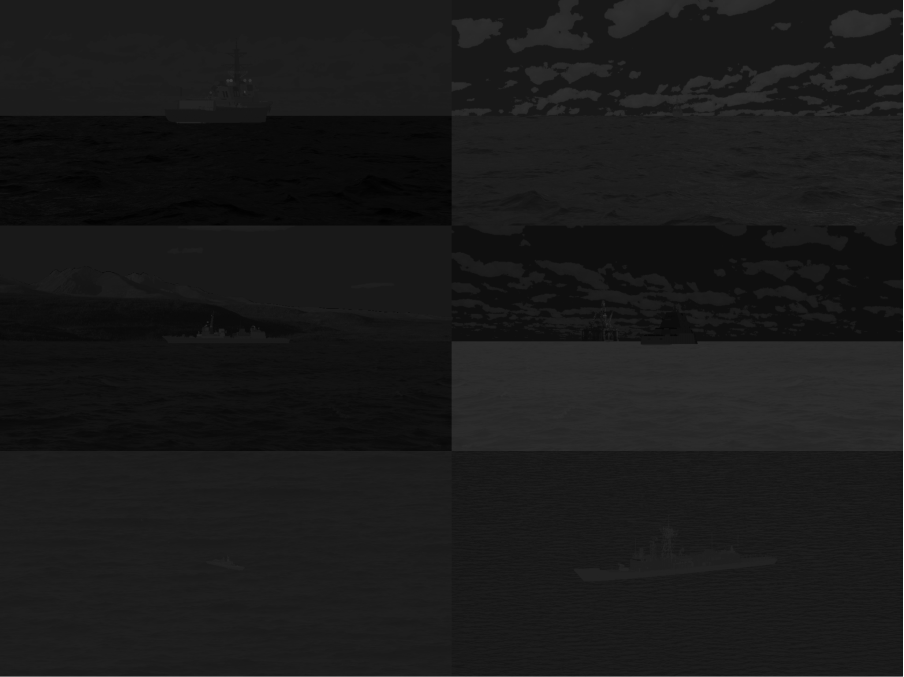

IRShips is a dataset of synthetically generated IR imagery designed for the training and development of deep-learning based ATR algorithms.
Images were generated with CounterSim using a virtual camera in the 8-14 µm waveband.

The ships included in this dataset are:
| Type | Class |
|---|---|
| Corvette | Ada |
| Corvette | Independence |
| Corvette | Visby |
| Frigate | Alvaro De Bazan |
| Frigate | Jiangkai II |
| Frigate | Oliver Hazard Perry |
| Destroyer | Akizuki |
| Destroyer | Sejong Daewang |
| Destroyer | Zumwalt |
| Ferry | Armourique |
Ships are imaged at:
Run the
setup.py
script to unpack the dataset and to download and pre-process some images for use in online data augmentation.
Simply use the command:
python3 setup.py
NB this script will require:
The third-party images downloaded in this process are itemised in
urls.yaml
.
For each image, the following information is given:
At its top level, the IRShips dataset contains three directories and two files:
The augment directory contains the following three directories:
The sea directory contains the following two directories:
The
clutter
directory contains directories, each of which contains images for background clutter augmentation.
The name of these sub-directories denote the
type
of the clutter.
The possible range of pixel intensities for each 'type' of clutter can be altered independently, using the
clutter_intensity_range
keyword argument of the
Dataloader
object.
The default clutter types are ice, landscape and structure, however it is possible to add any number of additional types .
Here is an overview of the structure described above:
irships
├ augment
│ ├ clutter
│ │ ├ ice
│ │ │ ├ 0000.png
│ │ │ ├ 0001.png
│ │ │ └ ...
│ │ ├ landscape
│ │ │ ├ 0000.png
│ │ │ ├ 0001.png
│ │ │ └ ...
│ │ └ structure
│ │ ├ 0000.png
│ │ ├ 0001.png
│ │ └ ...
│ ├ sea
│ │ ├ elevated
│ │ │ ├ 0000.png
│ │ │ ├ 0001.png
│ │ │ └ ...
│ │ └ horizontal
│ │ ├ 0000.png
│ │ ├ 0001.png
│ │ └ ...
│ └ sky
│ ├ 0000.png
│ ├ 0001.png
│ └ ...
├ images
│ ├ 00000000.png
│ ├ 00000001.png
│ └ ...
└ labels
│ ├ 00000000.png
│ ├ 00000001.png
│ └ ...
├ key.yaml
└ metadata.csv
The metadata file, contains the following column names:
Supporting code for this dataset can be found in
utils.py
and includes dataloader.
If you would like:
please visit my GitHub repository .
The
example.py
script demonstrates how the dataloader may be used to load IRShips images.
Simply use the command:
python3 example.py
NB this script will require:
Images included in this repository are licensed under CC BY-NC-SA 4.0, a full copy of this licence be found here .
If this dataset helps your research, please give recognition by citing the accompanying paper. Example BibTeX entry below:
@inproceedings{westlake2020deep,
title={Deep learning for automatic target recognition with real and synthetic infrared maritime imagery},
author={Westlake, Samuel T and Volonakis, Timothy N and Jackman, James and James, David B and Sherriff, Andy},
booktitle={Artificial Intelligence and Machine Learning in Defense Applications II},
volume={11543},
pages={1154309},
year={2020},
organization={International Society for Optics and Photonics}
}